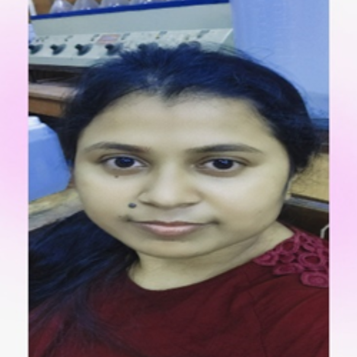

1. Food and Nutrition
2. Clinical Nutrition
3. Diet Therapy
4. Food Processing
1. Obtained 4th position in the Early Career Researchers Competition, organised by Legume Science (Wiley Journal) in 2022.
2. Obtained 1st position in paper presentation, entitled “Antioxidant activity of water melon (Citrullus lanatus)” in the State conference and scientific seminar (AIMLTA) in 2016.
3. Obtained 1st position in paper presentation, entitled “Role of water melon (Citrullus lanatus) in human health” in National seminar on research trends in medicine and biology: The issues of health, ecology and management (KRARDSWI) in 2016.
1. Najmun Nahar, Seyashree Hazra, Utpal Raychaudhuri, and Sunita Adhikari (Nee Pramanik), “Effect of different drying methods on drying kinetics, modelling, energy-economic, texture profile, color, and antioxidant of lotus rhizomes (Nelumbo nucifera)”. Journal of Food Processing and Preservation, (2022). DOI: 10.1111/jfpp.16842, Impact factor – 2.609
2. Najmun Nahar, Seyashree Hazra, Utpal Raychaudhuri, and Sunita Adhikari (Nee Pramanik), “Development a Novel Poushtic Powder: Nutritional characteristics, organoleptic properties, morphology study, storage, and cost analysis of supplementary food for a vulnerable group in Midnapore”. Research Journal of Pharmacy and Technology, (Accepted July 09, 2022), Impact factor – 1.203
3. Najmun Nahar, Utpal Raychaudhuri, and Sunita Adhikari (Nee Pramanik), “Drying kinetics, texture profile, and antioxidant properties of black gram (Vigna mungo) nuggets as influenced by hot-air, microwave, and freeze-drying”. Journal of Legume Science, Wiley, (Abstract accepted and Full manuscript publication is under process) (2022).